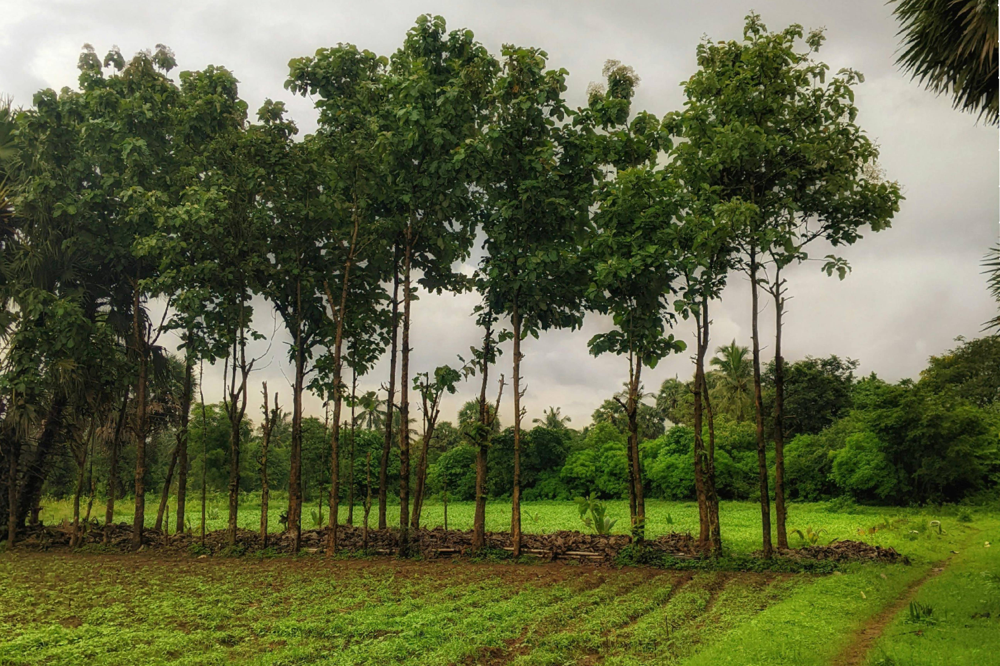
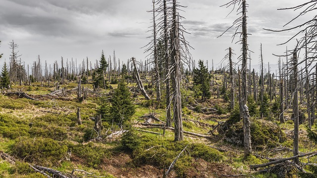

Land Degradation & Desertification
Land degradation is the general decline in land quality and productivity, while desertification is a specific type of land degradation occurring in dryland areas. Both are caused by a combination of human activities and climate-related factors, leading to widespread environmental and social consequences.
Causes & Impacts
Causes
- Deforestation & vegetation loss
- Overgrazing, farming intensification
- Urban sprawl and infrastructure
- Climate change and droughts
Impacts
- Soil infertility, lower yields
- More dust storms & floods
- Loss of critical habitats
- Economic hardship & migration
FACT #1
Desertification impacts nearly 2 billion people worldwide, threatening food security, water access, and livelihoods. It’s especially severe in arid and semi-arid regions, where land degradation reduces agricultural productivity and forces migration.

FACT #2
Every year, the world loses 24 billion tons of fertile soil due to unsustainable farming, deforestation, and climate change. This loss contributes to soil infertility, making it harder to grow crops and sustain ecosystems.

FACT #3
Satellite imagery reveals expanding deserts and shrinking vegetation cover across continents. The Tibetan Plateau, for example, shows increasing sand dunes and barren landscapes—clear signs of human-driven desertification.
Solutions & Restorations
- Adopt sustainable land practices like agroforestry & crop rotation.
- Protect forests, wetlands, and grasslands.
- Support UNCCD policies & global restoration efforts.
- Engage local communities in restoration projects.
Interactive Learning
Discover how your actions impact land health through an engaging activity.
Start the Interaction